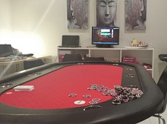
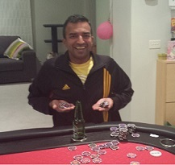

.....Mark's favourite poker location....
| Date | Location | Game | Players |
|---|---|---|---|
| {{tournaments.tournamentOne[0].eventDate}} | {{tournaments.tournamentOne[0].location}} | {{tournaments.tournamentOne[0].tournament}} | {{tournaments.tournamentOne[0].noOfPlayers}} |
| Position | Name | Points | Won |
|---|---|---|---|
| {{result.position}}{{positionSuffix(result.position)}} | {{result.name}} | {{result.points}} | {{result.cash | currency}} |
| Bounty Winner |
|---|
| {{tournaments.tournamentOne[0].bountyWinner}} |
| Position | Name | Played | Won | Win Ratio | Ave Points | Ave Position | Points |
|---|---|---|---|---|---|---|---|
| {{$index + 1}}{{positionSuffix($index + 1)}} | {{result.name}} | {{result.played}} | {{result.won}} | {{result.won / result.played * 100| number:2}} % | {{result.points / result.played | number:2}} | {{result.averagePosition | number:2}} | {{result.points}} |
Poker returned to Brian's house with a familiar tale. Similar to Brian having happy hunting grounds at Ben's house, Mark V again took out the top spot after previously winning both tournaments at Brian's last year. This was not an easy win though, as Mark fended off a late onslaught to take out the top points. Also, the start of the new "super bonus" meant Jade was picked as the random player knowing that he would take down the "massive" pot if he were to win the nights event.
The international star studded cast of 3 Poms, 2 Australians, 1 Sri Lankan and 1 Kiwi ventured to Brian's. Brian copied Ben's idea with a poker timer displayed at the end of the table on a monitor, although not quite as grandiose in it's proportions. Jade was first to turn up and mark his territory in the ice filled sink, closely followed by Ben showing conviction to the cause after having all his wisdom (teeth) removed, and starting his own self medication pain relief programme. Dave, Mark and Andy (returning for a second event in a row!) finished the 7.30pm starting line up with Simon a known late starter.
Mark was still studying his winning hand cheat sheet, but did not get off to his customary flying start after lots of folding, and in fact it was Dave who was running hot early on getting a few decent wins to swell his chip stack.
|  |
| Monitor envy, but table still looking good |
Jade was the first victim to a cranky lady luck who snubbed her nose at him as his flush was beaten by a higher flush. Ben and Simon were having some success, but Andy was struggling after calling strong bets after he had matched a lower card on the flop, and he soon found himself out of chips before the first break, thus receiving his extra chips earlier than other players.
Into the second hour with the recycling bin straining under the weight of the empty bottles, the chips seemed to be flowing in most directions but Mark was now starting to edge Dave out of the chip leader position, whilst Ben, Simon and Brian were hot on their heels. Jade also hit the best hand of the night with a full house and as a result pushed Andy again onto the brink of a chip free zone.
The pointy end of the tournament soon had it's first casualty as Andy could not get any good cards, and attempted a stone cold bluff, which unfortunately for him was called and meant he was allocated "lucky" last place. The final chance for a re-buy was edging nearer and unfortunately for Dave, his early run of luck had deserted him, and as he correctly stated, it's better to get the good cards towards the end of the tournament rather than the start! Going out just before the 3rd break and declining to re-buy meant that Mark, Jade, and Ben's stacks were the dominant force whilst Simon and Brian's stacks were moving into the danger zone.
The blinds were now ominously high and again Jade must have upset lady luck as his strong hand was beaten by a better kicker card. Wallowing in his understandable self-pity, he did manage to claw back some chips and suddenly found himself in the top three, as three all ins from Simon, Ben and Mark meant the exit of two players. Mark having the bigger stack called the all ins, and fortunately for him, his cards held and meant Simon was placed 5th and Ben 4th (as Ben had a bigger starting stack pre-flop).
At this point, it was Brian who managed to win some hands and with blinds at $500, $1000 with a $100 ante meant any win now, was a very profitable win! Now Jade whose chip stack had been up and down more times than a loose ladies undergarments was close to being as chip free as a dieter on a health kick. Brian's comment that although unlikely, he'd seen people win from such a lowly position before, was met with Mark's retort that he would "run naked around the square if Jade did come back". Luckily for the neighbours, Jade didn't last much longer and still ruing his evenings bad luck, he was out in a respectable 3rd place gaining the extra bonus point for finishing in the top three. At least to everyone else's delight, Jade's departure meant the "super bonus" rolls, over to the next event.
|  |
| Mark balancing out how he was going to spend his winnings |
Mark's stack was openly deriding the minuscule effort of Brian's chip count, but punching above it's weight, this David and Goliath battle was not over yet. Almost every hand, Mark was facing an all-in from Brian, and after either folding, or calling and losing, soon saw the chips move across the table. In a few short hands, Brian's stack was now marginally bigger than Mark's, and after another all in, with Brian hitting 2 pairs with his 9, after the flop offerred 9 4 4, he was happy for Mark to call. Mark, though was also happy to see the flop as his 4 meant he had already hit trips. The turn and river card helped no-one, so now Mark was again holding almost all of the evenings chips. Not even having enough for one big blind, the following hand Brian had no choice but to go all in, but with two below par starting cards meant Mark took out the honours, top points and the bounty prize.
Congratulations to Mark for a well fought win, after being pushed back onto the ropes with a series of heavy counter blows, he unleashed the final knock out punch, leaving Brian prostrate on the canvas but at least with the consolation of gathering numerous points for his second place finish. Mark also has the accolade of 3 tournament wins over all seasons, one more than Brian with 2 wins, and with a big list of players on one win.
After first and second place finishes in the first two events, means Brian remains on the top of the ladder with 16 points, but Mark surges northwards to take out second place with 11 points, at the expense of Ben who slips a place to third with 10 points. Jade joins the ladder with a positive fourth position, with Steve dropping two places. Simon enters the fray in 6th, followed by Andy (who drops 3 places), and Dave currently the bottom dweller, but only having played the one game.
Looking forward to the next exciting installment.....